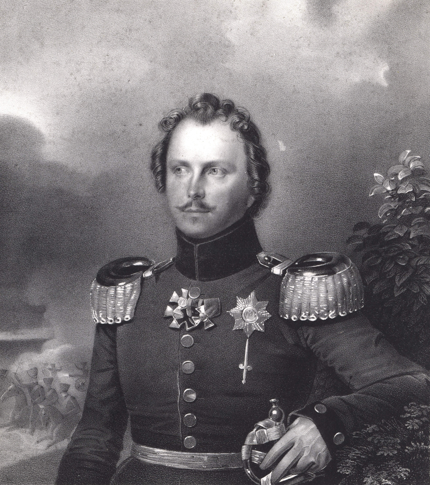
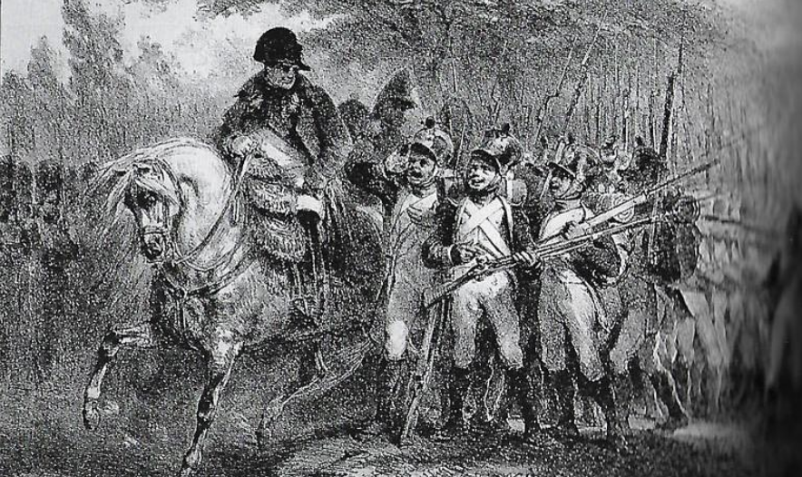
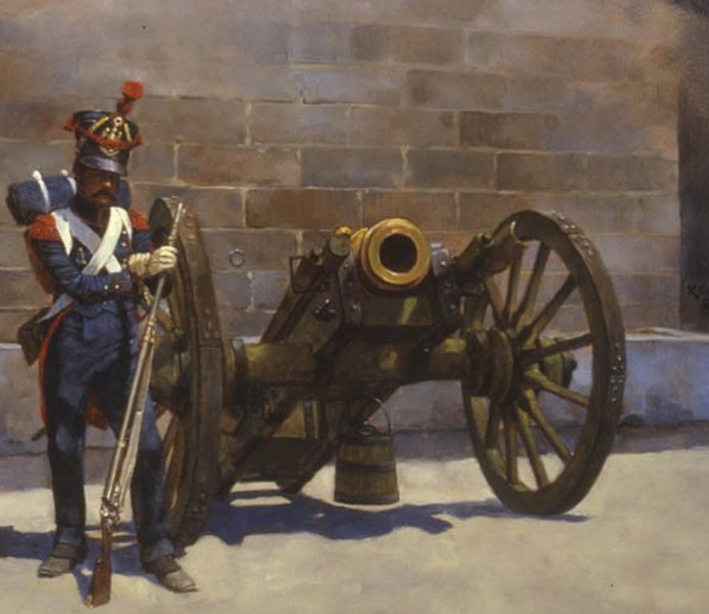
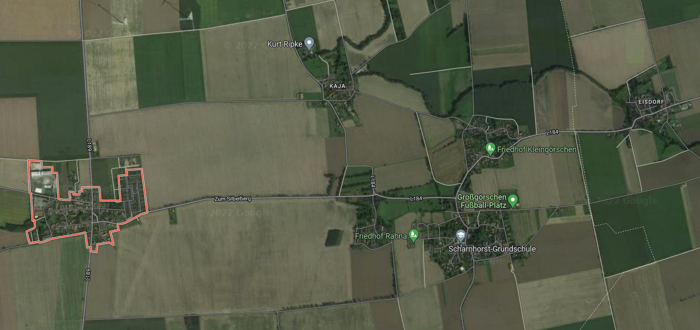

뤼첸 전투 (2) - 계획대로 전개되는 전투란 없다
게시: 2022-09-12T06:30:29+09:00
비트겐슈타인이 그로스괴르쉔 등 4개 마을에 주둔한 프랑스군 후위 부대를 공격하려 했던 것은 꼭 짜르와 프로이센 국왕에게 눈요깃거리를 제공하기 위한 것만은 아니었습니다. 그는 그 인근에 블뤼허와 빈칭게로더, 요크와 베르크 등 주요 부대들을 모두 집결시켜 놓고 있었고, 이제 오후 3시쯤 도착하게 되어 있는 토르마소프의 러시아군 본대만 오면 이번 작전에 투입할 병력을 거의 다 전투 위치에 가져다 놓는 셈이었습니다. 따라서 더 미룰 이유도 없었습니다. 프랑스군 우익의 후위 부대임이 분명한 눈 앞의 저 2천 병력을 제거한 뒤에는, 후방을 털린 프랑스군 우익을 뒤쪽으로 완전히 우회하여 바이센펠스-뤼첸 일대의 탁 트인 평원에서 자신들의 우월한 기병 전력을 투입하여 프랑스군 우익에게 결정적 한방을 먹일 작전이었습니다. 비록 연합군의 병력이 프랑스군 전체 야전군보다는 적었지만, 북서쪽에서 내려오는 외젠의 좌익과 남서쪽에서 올라오는 나폴레옹의 우익으로 분산된 프랑스군 중에서 우익만 집중 공격함으로써 승리를 낚아챌 수 있을 것이라고 보았습니다. 이를 위해 비트겐슈타인은 1시간에 걸쳐 그로스괴르쉔 마을을 중심으로 병력 배치를 재정비했습니다. 이 병력들은 모나쉔휘겔 언덕에서 이어지는 야트막한 능선에 의해 은폐되어 그로스괴르쉔 마을에서는 전혀 볼 수가 없었습니다. 이렇게 몰래몰래 공격을 준비하는 부대의 제1열은 블뤼허의 부대들이었는데, 비트겐슈타인은 그 부대들 중 클뤽스 (Joseph Friedrich Karl von Klüx) 준장의 여단에게 최초의 공격을 맡기기로 했습니다. 그랬더니 불과 몇 분 뒤, 블뤼허 본인이 칼을 뽑아든 채로 비트겐슈타인에게 말을 달려와 쌀쌀한 목소리로 클뤽스 여단의 공격은 블뤼허 본인이 직접 지휘하게 해달라는 요청을 했습니다. 비트겐슈타인이 어떻게 그 노장을 말릴 수 있었겠습니까? 비트겐슈타인은 드물게 불어가 아니라 독일어로 '신의 가호가 함께 하기를'이라고 말하며 허가해 주었습니다. 비트겐슈타인의 마을 공격 계획은 상당히 철저하고 잔인한 것이었습니다. 먼저 클뤽스, 아니 블뤼허의 보병 여단이 능선을 넘어 4개 마을로 공격해들어가면 그 혼란을 틈타 다른 부대들과 함께 경포병 부대를 동반한 기병대가 쏟아져 나와 건너편 능선을 점령하고 4개 마을을 완전히 포위할 예정이었습니다. 약 3천에 달하는 그 기병대와 경포병 부대는 국왕의 막내 동생인 빌헬름(Friedrich Wilhelm Karl) 왕자가 직접 지휘했습니다. 게다가 그 뒤로는 빈칭게로더 휘하의 기병대가 바싹 붙어 지원하고 있었을 뿐만 아니라, 빈칭게로더의 보병 부대까지 모조리 이들을 뒤따를 예정이었습니다. 고작 2천의 프랑스군이 점령하고 있다는 작은 마을 4개 점령치고는 굉장한 병력을 쏟아붓는 셈이었습니다.

(빌헬름(Friedrich Wilhelm Karl) 왕자입니다. 그는 당시 딱 30세의 나이였고 이미 1806년 예나-아우어슈테트 전투 때도 기병대의 일원으로 참전한 바 있었습니다. 이후에도 라이프치히 전투 등에서 기병대를 지휘했고, 워털루 전투 때도 기병대 지휘관이었습니다. 종전 이후 그는 여기저기의 지휘관 및 관직을 지내며 잘 살다가 68세에 베를린에서 사망했습니다.) 그러니 프로이센군이 모나쉔휘겔 능선을 넘어 우르르 쏟아져 나왔을 때 마을 안의 프랑스군이 느꼈을 경악은 짐작할 만합니다. 적의 내습을 전혀 눈치채지 못하고 있던 프랑스군은 그야말로 엎어지고 자빠지며 허둥지둥 쏟아져나와 마을 외곽에 방어선을 구축하려 애썼습니다. 가뜩이나 전체 병력 대부분이 신병인 나폴레옹의 마인 방면군 내에서도 이 마을 속 프랑스 부대는 전진하는 부대의 후위 부대였으니, 정말 고참병들의 비율이 매우 적었을 것입니다. 실제로 조미니(Jomini)의 기록에 따르면 이들은 모두 불과 서너달 전에 징집된 18살짜리 소년들에 불과했습니다. 그런데도 이들의 대응은, 사전에 정찰해보고 내린 '군기가 풀리고 경계심도 약하다'는 뮈플링 대령의 평가와는 달리 나름 나쁘지 않았습니다. 이들은 아무렇게나 달려나와 우왕좌왕하지 않고 일부는 비워두었던 그로스괴르쉔을 점거하고 일부는 그 남쪽 공터에 늘어서 방어선을 만들었으며, 대부분은 장교들과 부사관들의 지휘에 따라 4개 마을이 이루는 사다리꼴 모양의 평지에 집결했습니다. 기습을 당한 프랑스군도 놀랐지만 우렁차게 고함을 지르며 능선을 넘어 달려내려온 프로이센군과 그 선두에 선 블뤼허도 놀라기는 마찬가지였습니다. 2천 정도라고 보고를 받았지만 눈 앞에 정렬하며 대오를 맞추고 있는 프랑스군은 아무리 봐도 1만은 넘어 보였기 때문이었습니다. 3~4천에 불과한 자신들로서는 도저히 어쩔 수 있는 병력이 아니었고, 게다가 저들은 기습을 당해 어쩔 줄 모르며 거미새끼처럼 흩어져야 하는데 그와는 달리 나름대로 질서정연하게 집결하고 있었습니다.

(1813년 이후 나폴레옹의 휘하에서 싸웠던 어린 프랑스 소년병들은 비록 스태미너나 전술 훈련 등에서 크게 부족했지만 나폴레옹까지 흠칫 놀랄 정도로 매우 잘 싸웠습니다. 그 이유는 대부분의 소년들이 나폴레옹의 방침에 따라 평소 읽고 쓰는 기본 교육과 함께 황제에 대한 숭배 교육을 받았기 때문이었습니다. 나중에 추가 모집된 소년병들은 전쟁터에 나간 남편을 대신해 징집안에 서명한 황후 마리 루이즈의 이름을 따서 모두가 '마리-루이즈'(Marie-Louise)라고 불렀다고 합니다.)
결국 블뤼허는 원래 머릿속에서 그렸던 것과는 달리, 그대로 4개 마을 안쪽으로 달려들어가지 못하고 일단 그로스괴르쉔 남쪽 1.2km 지점에서 정지해야 했습니다. 그리고 클뤽스 여단의 자체 포병대는 물론 기타 지원 부대의 포병대들까지 다 모아서 36문의 포병진을 방열하고는 포격을 시작했습니다. 이 포격은 거의 1시간 가까이 지속되었습니다. 마을들 사이의 공터에 집결한 보병 부대와 마을 남쪽에 방어선을 구축하고 늘어선 보병 부대들을 먼저 두들겨 부드럽게 만들 작정이었습니다. 그러나 그러는 와중에 기습이 가져오는 물리적 정신적 이점은 모두 사라져 버렸고, 오히려 프랑스군에서도 6~8문의 대포들이 방열되어 대응 사격을 시작했습니다. 게다가, 프랑스군 신병들은 쏟아지는 포탄 속에서도 의외로 잘 버텼습니다. 바로 옆의 동료들이 피떡이 되어 날아가는 모습을 보면서도 소년병들은 겁을 먹고 대오를 깨고 흩어진다든가 하는 추태를 보이지 않았고, 수암 장군의 지휘에 따라 오히려 일부 경보병 부대는 프로이센군의 포병대를 향해 산개하여 전진하기도 했습니다.

(보병 사단에 일부 포병 중대가 딸려 있는 경우도 종종 있었는데, 원래 포병을 잘게 분산시켜 보병 연대에 배속시키는 것은 비효율적인 일이었습니다. 그러나 러시아 원정 실패 이후에는 주로 신병들로 이루어진 병사들의 사기를 북돋우고자 보병 부대에 포병을 약간씩 배치하는 경우가 많아졌습니다. 수암 사단에도 저렇게 적은 수의 포병들이 있었던 이유도 그것일 것입니다. 그림은 주로 포위전에 사용되었던 8인치 곡사포로서, 직사포였던 대포(cannon)에 비해 곡사포는 조준이 훨씬 어렵고 취급에도 전문성이 필요했으므로 보병 사단에 배치되는 일은 없었을 것입니다.)
그러나 결국 인간의 몸이 불과 쇠를 당해낼 수는 없었습니다. 측면에도 추가 배치된 연합군의 포병들이 프랑스군 포병대를 제압하고 마을 남쪽에 늘어섰던 부대들도 버티지 못하고 마을 안쪽으로 후퇴하자, 공격 개시 1시간 만에 마침내 블뤼허는 마을 안쪽으로 돌격을 명령했습니다. 프로이센군은 드높은 사기로 공격했고, 프랑스군도 용감히 맞섰지만 결국 마을 안쪽으로 조금씩 후퇴해야 했습니다. 마을 안에서는 농가 하나하나에서 치열한 백병전이 벌어졌으므로 프로이센군의 공격이 주춤했지만, 결국 제2차 공격대가 스크럼을 짜고 마을을 한쪽 끝에서 다른 끝까지 밀어붙여 결국 그로스괴르쉔을 완전히 점령했습니다. 그러나 그로스괴르쉔은 바싹 붙은 4개 마을 중 하나일 뿐이었습니다. 4개 마을이 이루는 사다리꼴 모양의 공터는 사실 탁 트인 곳이 아니라 온갖 시냇물과 울타리, 창고와 벽, 움푹 꺼진 도로 등으로 인해 이런저런 장애물이 많은 곳이었는데, 거기에는 수암 사단의 본대가 집결해 있었습니다. 비록 병사들은 신병이지만 장교들과 부사관들은 능숙한 지휘로 이런 장애물을 십분 활용하여 효과적인 방어전을 수행했습니다. 클뤽스 여단은 그로스괴르쉔에서 더 이상 전진을 하기는 커녕 그 마을에서 쫓겨나지 않으려 애쓰는 처지에 놓였습니다. 한편, 원래 계획대로 빌헬름 왕자가 지휘하는 기병대와 경포병대는 클뤽스 여단이 분전하는 동안 이 4개 마을을 포위하기 위해 말을 달려 라나-카야 마을들의 서쪽을 우회하고 있었습니다. 그러나 이들은 그 바로 서쪽에 있는 인근 마을인 스타지들(Starsiedel)에서 날아온 맹렬한 포도탄 사격에 기겁을 해야 했습니다. 알고보니 이 마을에도 프랑스군 1개 사단이 통째로 주둔하고 있었던 것입니다. 대체 어찌된 일이었을까요?

(항공사진 오른쪽에 표시된 비교적 큰 마을이 스타지들입니다.)
Source : The Life of Napoleon Bonaparte, by William Milligan Sloane Napoleon and the Struggle for Germany, by Leggiere, Michael V
https://www.instagram.com/p/CX83JKVILB8/